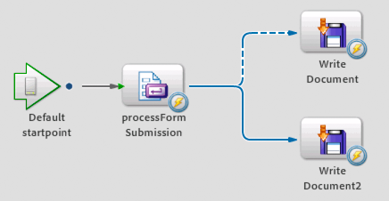

This Quick Start describes how to use the Forms service
to create a process to use XDP data submitted from a rendered PDF
form. The XDP data can be saved to a database, sent to another service
for processing, or manipulated and saved for later processing. For
more information about the Forms service, see
LiveCycle ES2.5 Services
.
When using the Forms service, data is submitted as XDP data.
The resulting data is converted to XML data (without the XDP data).
In the form design, the type of data submitted can be configured.
(See
LiveCycle Designer ES2 Help
.) For example, an organization
has a process that uses a common PDF form that is rendered to applicants
to submit loan requests in North America. Separate groups in the
organization handle the loan requests based on the country as follows:
In a web browser, applicants fill a PDF form that is rendered
by the Forms service. The country that an applicant resides in is
determined by the
Country
field. Users select the country
in which they reside using a drop-down list. The drop-down list
contains the values
Canada
and
United States
.
An application, named
handleSubmissionApp,
implements
the service for the organization. When a user clicks the Submit
button in the PDF form, XDP data is sent to a Java servlet. The
servlet invokes the handleSubmissionApp service. The service uses
the Forms to process the XDP data and in a separate step and saves it
to an XML file. The XDP data from an applicant in the United States
is saved to the network location \\GroupA_US\loan.xml. The XDP data
from an applicant in Canada is saved to the network location \GROUP_B_CAN\loan.xml.
To keep the loan request data files unique, a unique numeric string
is appended to end of the filename. For example, loan1.xml is created
if the loan.xml file exists at the network location.
The handleSubmissionApp application includes a process, named
handleFormSubmission,
that
includes the following items:
-
An input
document
variable, named
xdpXML,
that
stores the XDP data submitted from the servlet when the Submit button
is clicked.
-
An output
document
variable, named
outputXML
,
that stores the XML data.
-
A processFormSubmission operation (Forms service) that processes
the submitted data from a PDF form.
-
Two Write Document operations (File Utilities service) that
save the XML data as
document
values. The location
to save the XML depends on whether the applicant selected Canada
or United States in the drop-down list.
-
A conditional route that determines the next operation to
execute. When the value of the Country field is United States, the
Write Document operation executes; otherwise, the Write Document2
operation executes.
The process diagram for the handleFormSubmission process looks
like the following illustration:
Note:
Conditional routes appear as dotted lines in
the process diagrams.

The following text shows relevant parts of the XDP data for understanding
this Quick Start. The data is stored in the
<xfa:datasets>
element
and each element in the XML tree can be accessed in the process.
In the example that follows, the applicant resides in the United
States:
<?xml version="1.0" encoding="UTF-8"?>
<?xfa generator="XFA2_4" APIVersion="3.0.8262.0"?>
<xdp:xdp xmlns:xdp="http://ns.adobe.com/xdp/" timeStamp="2009-11-27T19:16:38Z" uuid="1fe71528-34a5-43df-8ad1-7f08126b3698">
...
<xfa:datasets xmlns:xfa="http://www.xfa.org/schema/xfa-data/1.0/">
<xfa:data>
<LoanApp>
<Name>Akira Tanaka</Name>
<LoanAmount>100000</LoanAmount>
<PhoneOrEmail>atanaka@sampleorganization.com</PhoneOrEmail>
<Country>United States</Country>
<ApprovalStatus>PENDING APPROVAL</ApprovalStatus>
</LoanApp>
...
<xfa:data>
...
</xdp:xdp>
Other considerations
The form used to submit data must be rendered using Forms
service. For example, use the Render PDF Form operation to render
a PDF form for submission. You cannot use a PDF form created in
Acrobat to submit a form to the Forms service. For a web-based system,
consider using a Java servlet. (See
Creating Web Applications that Renders Forms
in
Programming with LiveCycle ES2.5
.)
The Java servlet can handle the rendering and the submission of
the PDF form for users that use the service from a web browser.
Instead of using a Java servlet to invoke the service, consider
using a web service to invoke the service. For example, JavaScript
can be added to the Submit button to invoke the process. (See the
Connecting to a data source
topic
in
LiveCycle Designer ES2 Help
.)
This Quick start does not describe how to pass the XDP data from
a Java servlet to invoke the service. (See
Passing data to LiveCycle ES2 services using
the Java API
in
Programming with LiveCycle ES2.5
.)